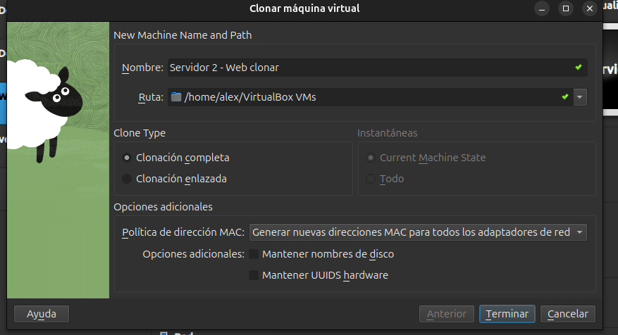
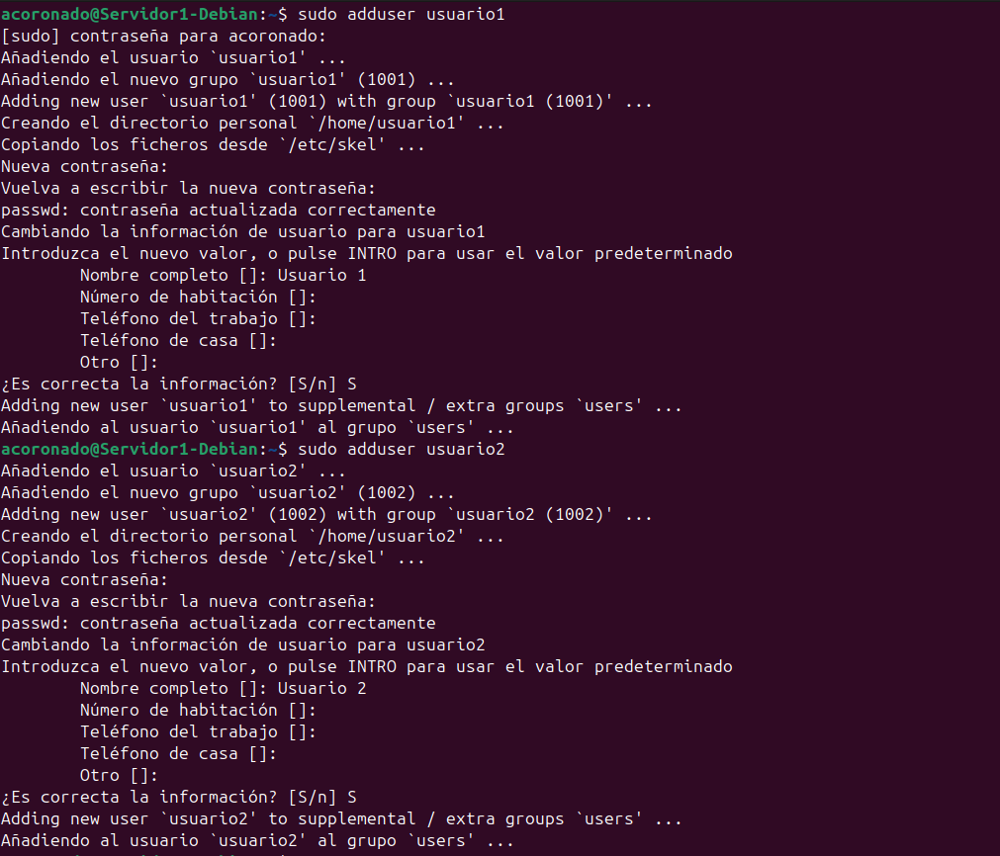
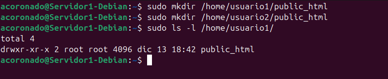
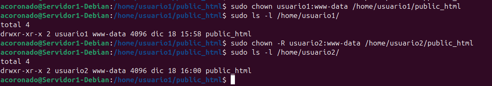
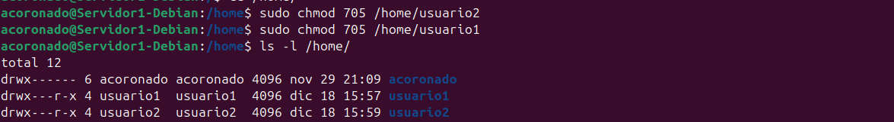
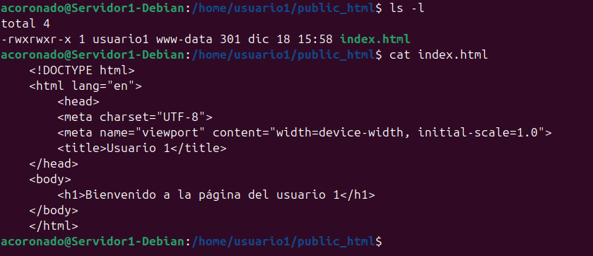
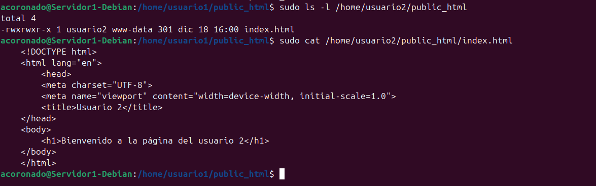
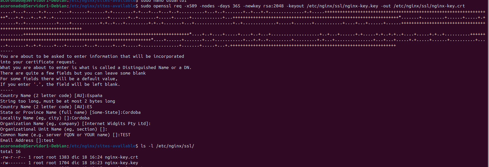
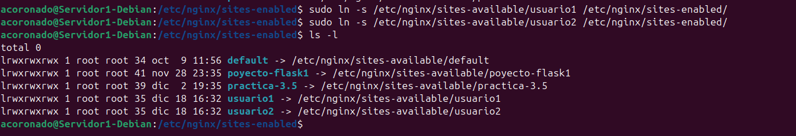
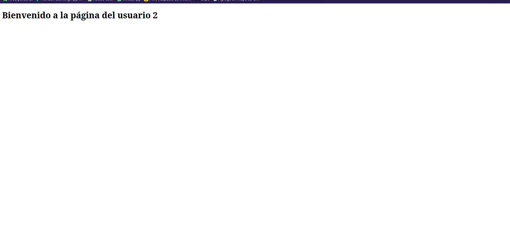

Práctica de Ampliación
En esta práctica lo que haremos será configurar Nginx para que utilice hosts virtuales para alojar múltiples sitios web en un solo servidor y que cada host virtual apunte al directorio public_html de distintos usuarios del sistema operativo Debian. De esta manera, cada usuario podrá gestionar su propio sitio web desde su carpeta personal.
1. Instalación de Nginx
Para agilizar este proceso simplemente clonaremos una de las máquinas virtuales de las prácticas anteriores. Clonaremos la que tiene Nginx instalado y tenga pocas configuraciones aplicadas en mi caso será una de las máquinas virtuales que usamos como servidor web para el servidor proxy.

Importante
Recordad que deberemos seleccionar la opción de generar una nueva dirección MAC para la máquina virtual para que todo funcione correctamente.
2. Creación de usuarios
Tras completar la clonación deberemos crear 2 usuarios para esta práctica. En este caso los llamaremos usuario1 y usuario2 paro eso ejecutaremos los siguientes comandos.

Además durante la creación de usuarios, se nos pedirá que le asignemos una contraseña a los nuevo usuarios, a parte de otras opciones de configuración más.
2.1 Creación de carpetas public_html
Una vez que hayamos creado los usuarios deberemos crear las carpetas public_html en los directorios personales de usuario1 y usuario2
para ello usaremos los siguientes comandos:

Y cuando hayamos creado estas carpetas le cambiaremos los propietarios para que puedan usarlas los usuarios correspondientes.
sudo chown usuario1:www-data /home/usuario1/public_html
sudo chown usuario2:www-data /home/usuario2/public_html

También en la carpeta home le daremos permisos al resto de usuarios para que puedan leer y ejecutar archivos en los directorios personales de los usuarios con el fin de permitirle a nginx acceder a los archivos html

2.2 Creación HTML básico
A continuación dentro de las carpetas public_html crearemos un html básico para que nginx pueda mostrar
algo cuando nos conectemos, además nos permitirá identificar a qué usuario pertenece la página a la que nos conectamos.
Para eso usaremos los siguientes html los cuales nombraremos como index.html:


Permisos
Es importante que tras la creación de estos archivos comprobemos los archivos con los que se han creado y en caso de que no permitan a otros usuarios ejecutar el archivo deberemos ejecutar el siguiente comando para cambiar los permisos del archivo:
3. Configuración NGINX
3.1 Creación claves SSL
En este apartado le añadiremos a nuestro servidor una capa de seguridad necesaria. Haremos que todos nuestros sitios web alojados hagan uso de certificados SSL y se acceda a ellos por medio de HTTPS.
Para esto primero tendremos que generar un clave SSL con el siguiente comando, esta opción solo es válida si solo necesitas cifrado sin preocuparte por las advertencias de los navegadores sobre la validez del certificado:
sudo openssl req -x509 -nodes -days 365 -newkey rsa:2048 -keyout /etc/nginx/ssl/nginx-key.key -out /etc/nginx/ssl/nginx-key.crt

3.2 Archivos de configuración NGINX
Tras haber creado los usuarios y haberlos configurado procederemos a crear las configuraciones de nginx para cada sitio para esto crearemos un archivo de configuración para cada usuario
server {
listen 443 ssl;
server_name usuario1 www.usuario1;
ssl_certificate /etc/nginx/ssl/nginx-key.crt;
ssl_certificate_key /etc/nginx/ssl/nginx-key.key;
ssl_protocols TLSv1.2 TLSv1.3;
ssl_ciphers 'ECDHE-ECDSA-AES128-GCM-SHA256:ECDHE-RSA-AES128-GCM-SHA256:ECDHE-ECDSA-AES256-GCM-SHA384:ECDHE-RSA-AES256-GCM-SHA384';
ssl_prefer_server_ciphers on;
ssl_session_cache shared:SSL:10m;
access_log /var/log/nginx/usuario1.access.log;
error_log /var/log/nginx/usuario1.error.log;
root /home/usuario1/public_html;
index index.html;
location / {
try_files $uri $uri/ =404;
}
}
server {
listen 443 ssl;
server_name usuario2 www.usuario2;
ssl_certificate /etc/nginx/ssl/nginx-key.crt;
ssl_certificate_key /etc/nginx/ssl/nginx-key.key;
access_log /var/log/nginx/usuario2.access.log;
error_log /var/log/nginx/usuario2.error.log;
ssl_protocols TLSv1.2 TLSv1.3;
ssl_ciphers 'ECDHE-ECDSA-AES128-GCM-SHA256:ECDHE-RSA-AES128-GCM-SHA256:ECDHE-ECDSA-AES256-GCM-SHA384:ECDHE-RSA-AES256-GCM-SHA384';
ssl_prefer_server_ciphers on;
ssl_session_cache shared:SSL:10m;
root /home/usuario2/public_html;
index index.html;
location / {
try_files $uri $uri/ =404;
}
}

Tras esto crearemos los enlaces simbólicos en etc/nginx/sites-enabled para que indicarle a nginx que estos archivos
de configuración están activos.
sudo ln -s /etc/nginx/sites-available/usuario1 /etc/nginx/sites-enabled/
sudo ln -s /etc/nginx/sites-available/usuario2 /etc/nginx/sites-enabled/

Y por último reiniciaremos el servicio de nginx para que se apliquen los cambios.
4. Configuración equipo Anfitrión
Por último, configuraremos el archivo hosts de nuestra máquina anfitriona para poder conectarnos
a estas webs, para esto modificaremos el siguiente archivo /etc/hosts:
En donde añadiremos la ip y el nombre del dominio:
Ahora intentaremos conectarnos mediante el navegador y este nos lanzará una advertencia de que el sitio no es seguro esto se debe a que hemos autofirmado los certificados SSL, porque ignoraremos esta advertencia.
Y como podemos ver ambas páginas se muestran perfectamente.
